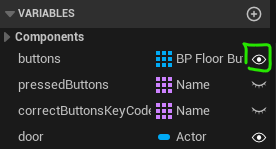
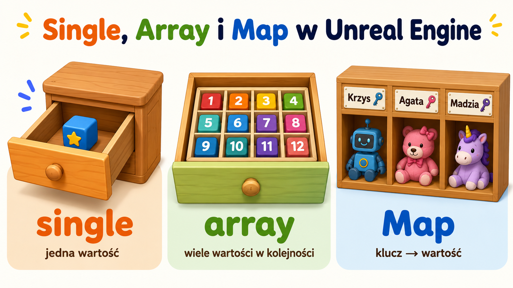
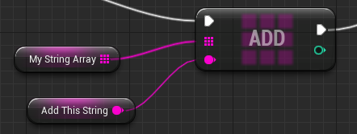
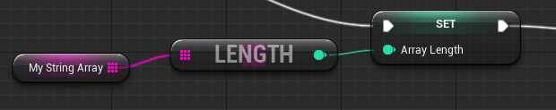
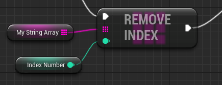
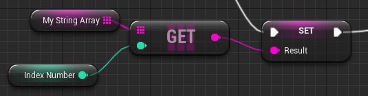
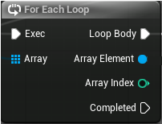
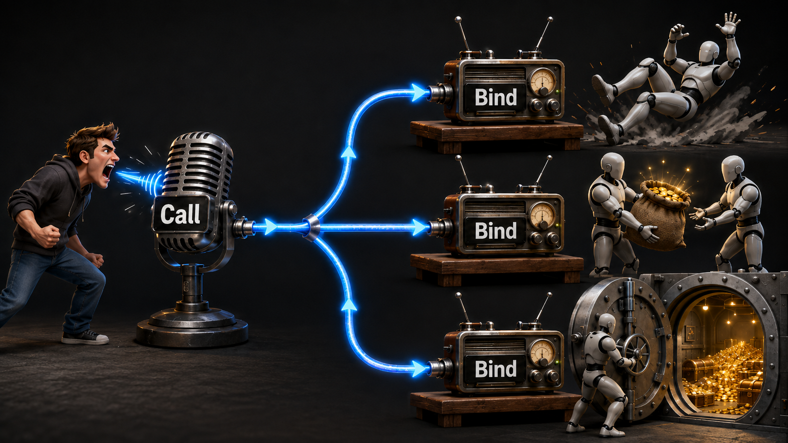

Na dzisiejszych zajęciach poznajemy zmienne publiczne, różne sposoby przechowywania danych oraz komunikację
między Blueprintami za pomocą Event Dispatcherów. Na koniec wykorzystujemy te elementy w prostej zagadce
z płytami naciskowymi i przejściem otwieranym po wykonaniu poprawnej sekwencji.
Zmienne publiczne
W Unreal Engine zmienną w Blueprintcie możemy ustawić jako publiczną, czyli edytowalną dla konkretnego aktora
postawionego już na scenie. Po zaznaczeniu takiego aktora wartość zmiennej pojawia się w panelu
Details i można ją zmienić bez otwierania Blueprinta.

Po zaznaczeniu aktora na scenie publiczna zmienna pojawia się w panelu Details.
Dzięki temu jeden Blueprint może działać w wielu wariantach. Przykładowo tworzymy jeden Blueprint drzwi,
a nazwę wymaganego klucza ustawiamy jako zmienną publiczną. Po wstawieniu kilku drzwi na scenę każde z nich
może wymagać innego klucza: jedne RedKey, drugie BlueKey, a trzecie
BossKey. Nie musimy kopiować Blueprinta ani tworzyć osobnej klasy dla każdych drzwi.
Zmienne publiczne przydają się szczególnie wtedy, gdy logika działania obiektu jest taka sama, ale różnią się
szczegóły: liczba punktów życia przeciwnika, prędkość platformy, kolor światła, nazwa klucza, tekst na tabliczce
albo czas, po którym pułapka ponownie się aktywuje.
Warianty zmiennych
W Blueprintach zmienna może przechowywać jedną wartość albo większy zestaw danych. Najczęściej spotkamy trzy
podstawowe warianty:

Single przechowuje jedną wartość, Array wiele wartości w kolejności, a Map łączy klucz z konkretną wartością.
Single
Zwykła zmienna przechowująca jedną wartość, np. jedną liczbę, jeden tekst, jednego aktora albo jedną
wartość true/false. Używamy jej, gdy potrzebujemy zapamiętać dokładnie jedną rzecz, np.
DoorIsOpen, PlayerHealth albo RequiredKeyName.
Array
Lista wielu wartości tego samego typu. Sprawdza się, gdy elementów może być kilka lub kilkadziesiąt,
np. lista posiadanych kluczy, lista przeciwników na arenie, lista punktów spawnu albo lista płyt
naciskowych w zagadce.
Map
Zbiór par klucz -> wartość. Mapy używamy wtedy, gdy chcemy szybko znaleźć wartość po jej
nazwie lub identyfikatorze, np. NazwaPrzedmiotu -> Ilość,
NazwaKlucza -> CzyPosiadany albo TypPrzeciwnika -> PunktyZaPokonanie.
i
Dobór wariantu zmiennej zależy od pytania, na które ma odpowiadać Blueprint. Jeśli pytamy „czy drzwi są
otwarte?”, wystarczy Single. Jeśli pytamy „jakie klucze ma gracz?”, lepsza będzie
Array. Jeśli pytamy „ile sztuk każdego przedmiotu ma gracz?”, wygodniejsza będzie
Map.
Listy
Array, czyli lista, pozwala przechowywać wiele wartości jednego typu w jednej zmiennej. To bardzo przydatne
np. przy ekwipunku, gdzie chcemy zapisać listę nazw przedmiotów posiadanych przez bohatera.
0
Pierwszy element Listy w Unreal Engine zaczynają się od zera.
1
Drugi element Indeks mówi, które miejsce na liście wybieramy.
2
Trzeci element O jeden mniej niż zwykłe liczenie na palcach.
To oznacza, że pierwszy element listy ma indeks 0, a nie 1. Jest to częste źródło
pomyłek, dlatego przy węźle Get zawsze warto sprawdzić, czy podajemy właściwy numer elementu.
Add

Dodaje nowy element na koniec listy.
Length

Zwraca liczbę elementów znajdujących się aktualnie na liście.
Remove Index

Usuwa element o wybranym indeksie. Po usunięciu elementu kolejne elementy przesuwają się, więc ich indeksy
mogą się zmienić.
Get

Pobiera element z listy na podstawie indeksu. Węzeł występuje w wersji copy i
ref. Wersja copy pobiera kopię wartości, więc późniejsza zmiana tej kopii
nie zmienia oryginalnego elementu na liście. Wersja ref daje bezpośrednie odwołanie do
elementu na liście, więc modyfikacja tej wartości może zmienić zawartość listy.
For Each Loop

Wykonuje tę samą akcję dla każdego elementu listy, po kolei, od pierwszego do ostatniego. Używamy go
np. wtedy, gdy chcemy sprawdzić, czy dany przedmiot znajduje się w ekwipunku, wypisać wszystkie elementy
listy na ekranie albo stworzyć grupę przeciwników w kilku punktach spawnu.
!Get (ref) bywa użyteczne, ale może powodować trudne błędy. Jeśli dwa eventy pracują na tej
samej liście i jeden z nich zmieni element w trakcie działania drugiego, wynik może być zaskakujący.
Wersja copy jest zwykle bezpieczniejsza i czytelniejsza, choć przy bardzo dużych danych może
zużywać więcej pamięci.
Listy są szczególnie wygodne przy zagadkach opartych na kolejności. Możemy mieć jedną listę z poprawną
sekwencją płyt naciskowych i drugą listę z tym, co nacisnął gracz. Następnie porównujemy obie listy
i sprawdzamy, czy gracz wykonał zadanie poprawnie.
Komunikacja między Blueprintami - Event Dispatchers
Event Dispatcher pozwala jednemu Blueprintowi ogłosić, że coś się wydarzyło, a innym Blueprintom zareagować
na ten sygnał. Można porównać go do radia: jeden obiekt nadaje komunikat, a inne obiekty, które wcześniej
zaczęły nasłuchiwać, wykonują swoje akcje, gdy ten komunikat się pojawi.

Jeden obiekt nadaje komunikat, a obiekty wcześniej podpięte do tego sygnału wykonują swoją reakcję.
Przykład: płyta naciskowa ma Event Dispatcher OnPressed. Kiedy gracz na nią wejdzie, płyta
wywołuje dispatcher. Drzwi albo osobny Blueprint zarządzający zagadką mogą nasłuchiwać tego zdarzenia
i zareagować: zapisać naciśniętą płytę, sprawdzić kolejność albo otworzyć przejście.
N
Nadawca
Obiekt, który ma dispatcher i wywołuje sygnał, na przykład BP_FloorButton.
S
Sygnał
Nazwane zdarzenie, np. OnPressed, OnReleased, OnDoorOpened
i OnPuzzleSolved.
O
Odbiorca
Blueprint, który podłącza się do sygnału i reaguje, gdy nadawca go wywoła.
i
Jeden Blueprint może mieć wiele Event Dispatcherów, np. OnPressed, OnReleased,
OnDoorOpened i OnPuzzleSolved. Może też nasłuchiwać wielu zdarzeń pochodzących od
innych obiektów. Dzięki temu obiekty nie muszą stale sprawdzać, co dzieje się w świecie gry. Zamiast tego
reagują dopiero wtedy, gdy dostaną konkretny sygnał.
!
Aby podpiąć się do Event Dispatchera, zwykle potrzebujemy referencji do konkretnego aktora, którego chcemy
nasłuchiwać. Jeśli drzwi mają reagować na płytę naciskową, muszą wiedzieć, o którą płytę chodzi. Taką
referencję można np. ustawić jako zmienną publiczną w panelu Details albo znaleźć aktora
w świecie gry, co bywa kosztowne.
Zagadka
Stworzymy prostą zagadkę: na podłodze znajdują się trzy płyty naciskowe, a gracz musi nadepnąć na nie
we właściwej kolejności, aby otworzyć przejście.
Gracz naciska płyty po kolei. Blueprint zarządzający zapamiętuje wybraną sekwencję i sprawdza, czy zgadza się
z poprawnym kodem.
1 Płyta nadaje sygnał
BP_FloorButton wykrywa wejście gracza i wywołuje dispatcher z nazwą przycisku.
2 Manager zapisuje wybór
BP_PuzzelMenager dopisuje naciśniętą płytę do listy pressedButtons.
3 Lista jest porównywana
Gdy liczba naciśnięć jest wystarczająca, manager porównuje wybory z correctButtonsKeyCode.
4 Drzwi reagują
Jeśli kolejność jest poprawna, wskazany aktor door może uruchomić animację albo ukryć blokadę.
BP BP_FloorButton
BP_FloorButton>EventGraph
BP BP_PuzzelMenager
BP_PuzzelMenager>EventGraph
Quiz
1. Do czego służy zmienna publiczna w Blueprintcie?
2. Kiedy warto użyć Array?
3. Od jakiego indeksu zaczyna się numerowanie elementów na liście?
4. Co robi węzeł Length dla listy?
5. Czym różni się Get (copy) od Get (ref)?
6. Do czego służy For Each Loop?
7. Jak działa Event Dispatcher?
8. Dlaczego odbiorca Event Dispatchera zwykle potrzebuje referencji do nadawcy?
9. Kiedy użyć zwykłej zmiennej Single?
10. Czym różni się Event Dispatcher od interface?
Wynik: 0/10
Zadanie
Stwórz kilka drzwi otwierane kluczem, niech każde dzwi wymagają innego klucza.